Making personal finance feel less like a spreadsheet and more like a conversation.
Client
WalletGyde
Timeline
3 months
Industry
B2C fintech
My role
Product design
Beforethe old appAfterBudgetBuilder
Drag to comparesame month, same money
Monthly position report
Gross inflow (MTD)
8,000.00
Fixed obligations
3,800.00
Discretionary outflow
1,750.00
Revolving liabilities
5,600.00
Net position variance
2,500.00
Savings ratio (YTD)
0.31
* see methodology for variance calculation
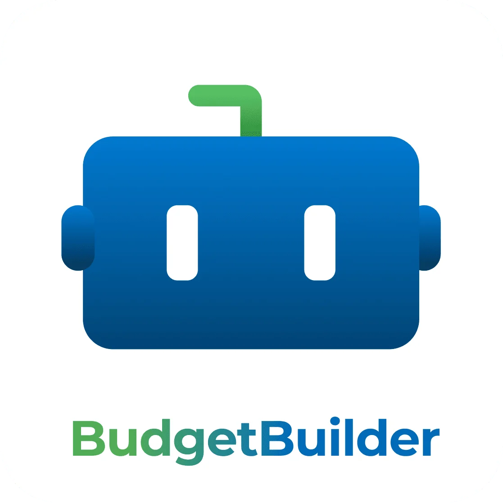
BudgetBuilder AI
You brought in $8,000 this month and spent $5,500. That leaves $2,500, and you're saving 31%. Nice.
You could save an extra $200 a month by cutting a few subscriptions. Want a plan?
Yes, show me
How much can I save?Am I on track for my goals?Give me a financial tip
same money, new conversation
Background
Built for people, not accountants.
WalletGyde is a B2C fintech platform built around BudgetBuilder AI, an in-house AI assistant designed to help everyday people understand and manage their finances.
But users were dropping off. Too much data, too much jargon, no clear next step. I joined the team to redesign the experience so BudgetBuilder AI could actually do its job.
User drop-off−22%through iterative, data-informed decisions
Cognitive load−50%through progressive disclosure and hierarchy
Shipped to engineeringfinal specs
SHIPPED
The problem
Informed, but stuck.
Three things kept people from acting on their own money. Each card below lets you feel the problem, then the fix.
01
Jargon overload
Your discretionary outflow exceeded its budgeted allocation, increasing revolving liabilities.
Financial terminology felt intimidating to people who just wanted to know where their money was going.
02
Data overwhelm
$2,500left this monthCredit scoreDebtIncomeNet worthExpensesSubscriptionsCash flowGoalsTrendsCoachingSavings
Everything was shown at once with no hierarchy. People couldn't tell what mattered or where to look first.
03
No clear next step
You spent $5,500 this month.
...so now what?
Trim $200 in subscriptions →
The app showed data but didn't guide decisions. People felt informed but stuck: no action, no momentum.
Before
What I walked into.
Not my designs. This is what existed before I joined the team. My notes are in red.
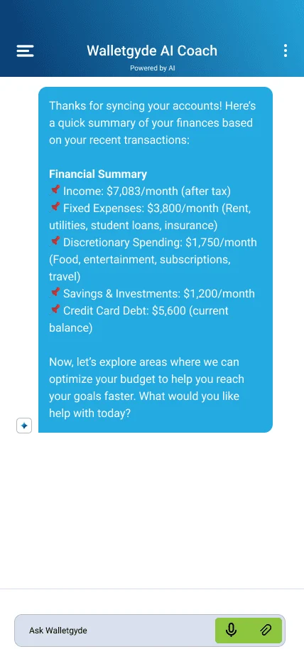
a whole statement in one bubble
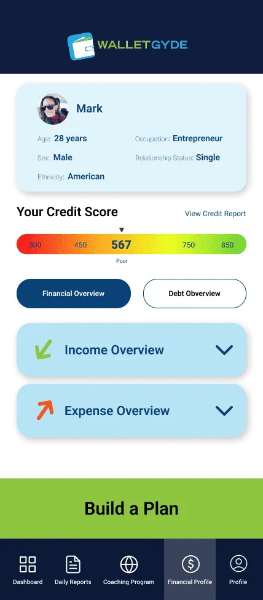
where do I look first?a coach, but no plan
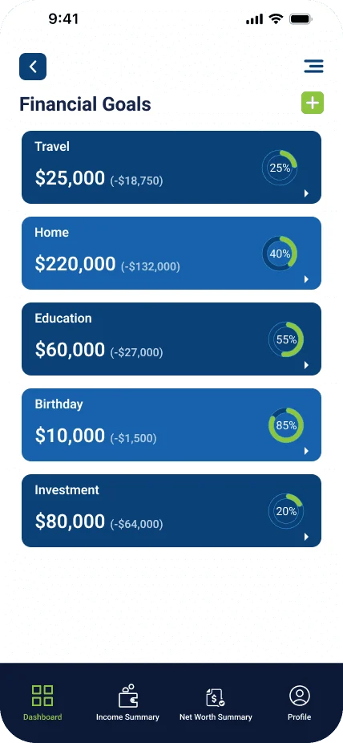
goals, but no next move
Research
From what we heard to how we designed.
Moderated testing and market surveys showed how real people think about their money. Each pain point became a principle, and each principle has a home in the product.
Moderated user testingMarket surveysSynthesis into 3 core problemsUsability tests on prototypes
What we heard
The principle
Where it lives
"I don't speak finance."
Jargon made people feel the app wasn't for them.
Every number gets a sentence
No figure appears without plain words beside it.
Credit score, chat answers
"750 · Excellent · Your credit score is in great shape."
"Where do I even look?"
Everything at once, nothing first.
Three numbers first, detail on demand
Lead with what matters; the rest is one tap deeper.
Dashboard and detail sheets
Income, expenses, leftover. Breakdowns open as sheets.
"OK... so now what?"
Informed, but no momentum.
Every insight leads somewhere
Each observation ends in an action or a question.
Insights and follow-up prompts
"Tap to chat with BudgetBuilder", "Set a financial goal".
The mobile app, decision by decision
Six calls, and what each one cost.
Scroll through. The phone follows the story, and the buttons let you flip between screens.
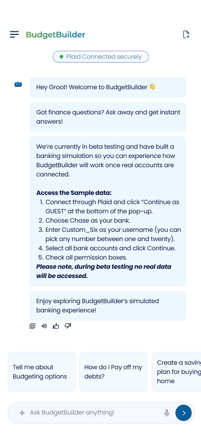
ask, don't search↕ scroll inside the phone
01
Chat is the front door.
BudgetBuilder opens with suggested questions written the way people talk: How do I pay off my debts?, Create a saving plan for buying a home. After an answer, the suggestions change to follow up: Am I overspending this month?
WhyA blank text box assumes you know what to ask, and the right financial word for it. Suggestions remove both.
Trade-offSuggestions steer people toward questions we answer well. Free text stays one tap away.
02
Every number gets a sentence.
A credit score never appears alone. 750 comes with Excellent and Your credit score is in great shape. Chat answers work the same way: categories, amounts, then one plain observation.
WhyJargon overload. People wanted to know if they were OK, not to decode a score.
Trade-offMore words on screen, so every sentence had to be short enough to scan.
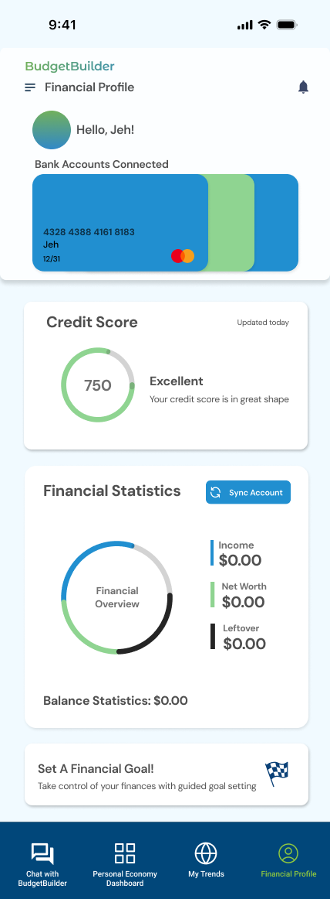
03
Three numbers first. Detail on demand.
The dashboard leads with income, expenses and what's left over. Breakdowns open as sheets on top, a month picker sits one tap away, and a toggle switches the same view to net worth.
WhyData overwhelm. People needed a starting point before they needed everything.
Trade-offDetail costs one extra tap. Knowing where to start mattered more.
↓ 50% cognitive load, through progressive disclosure and hierarchy
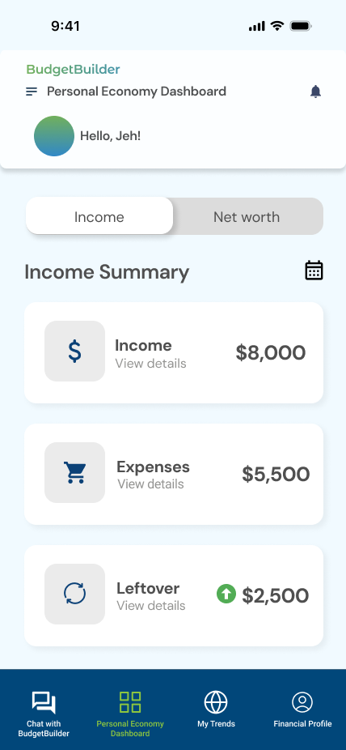
04
Bills and spending aren't the same thing.
Expenses split into Fixed and Flex. Fixed shows each bill with its due date, like rent Due 1st. Flex shows spending against a budget: Food, $1,200 of $1,500.
WhyYou can't change rent this month, but you can change dinner. Splitting them points people at the money they can actually move.
Trade-offA second tab to learn, in exchange for a clearer next move.
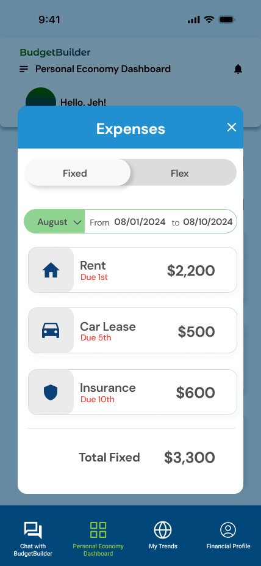
05
Every insight leads somewhere.
Trends end with an insight you can act on: Your dining expenses increased by 15% this month. Consider setting a budget alert. Tapping it opens a chat with BudgetBuilder. The profile ends with Set a financial goal.
WhyNo clear next step. Every observation now hands people to a decision.
Trade-offInsights must be specific enough to act on, which means fewer of them.
↓ 22% drop-off, through iterative, data-informed decisions
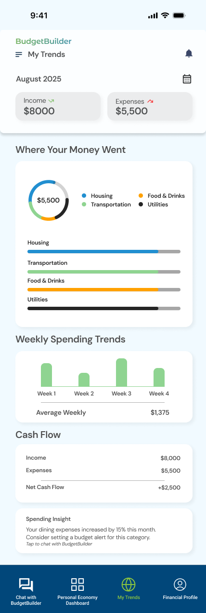
06
Honest about the beta.
Onboarding says plainly that answers use sample data and no real bank is connected yet. Plaid is named up front, and a Plaid Connected securely badge stays at the top of chat.
WhyIt's a money app. Trust is the product, and surprises break it.
Trade-offMore reading before the fun part, so each screen gets one line.
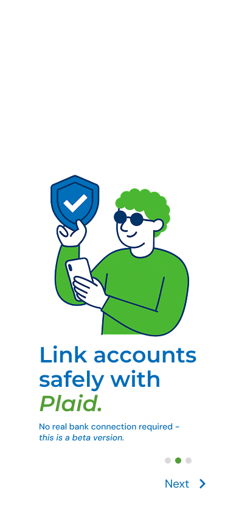
Process
One crowded screen became four calm ones.
The key decision: split the information architecture across four distinct screens so no single view felt overwhelming.
Chat with BudgetBuilder AIAsk in your own words. Start here.
Financial profileBalance, credit score, accounts.
My trendsWhere your money went this month.
Personal economy dashboardIncome against expenses, over time.
everything, all at once
one job per screen
01
User testing and surveys
Moderated testing sessions and market surveys on how real people think about their money.
02
Synthesize pain points
Mapped findings to jargon overload, unclear hierarchy and no sense of momentum.
03
Wireframe to high fidelity
Split the information architecture across four screens.
04
Test, iterate, ship
Usability tests on prototypes, iterated on language and layout, then final specs to engineering.
The full mobile set
The product, shipped.
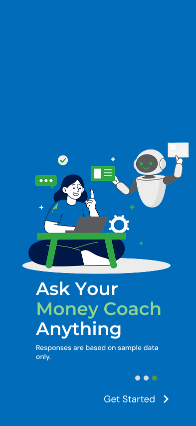
OnboardingAsk your money coach anything
Chat, first openSuggested questions, Plaid badge
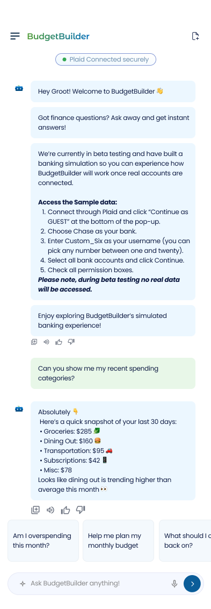
Chat, answeringCategories, then one observation
DashboardThree numbers first
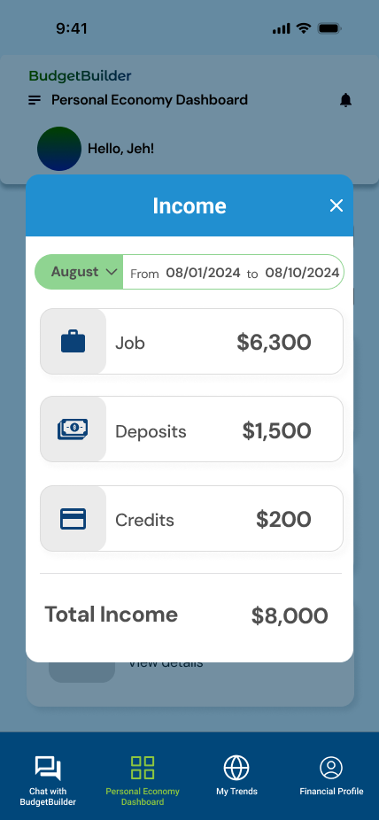
Income detailOpens as a sheet
Fixed expensesBills with due dates
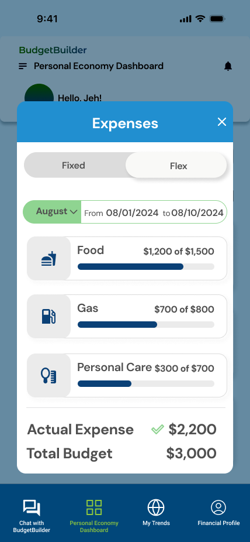
Flex expensesSpending against budget
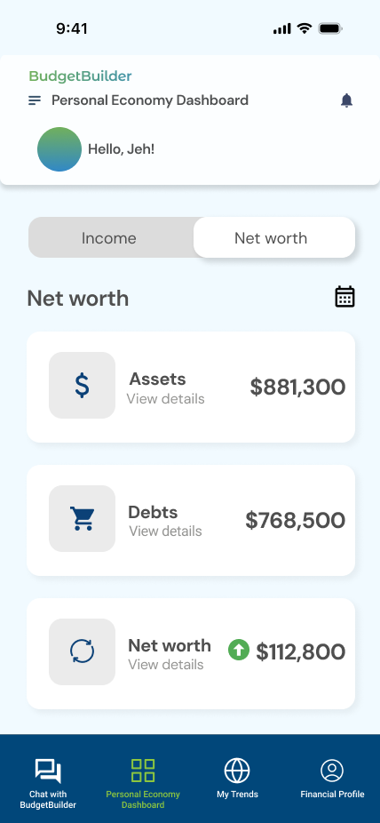
Net worthSame view, one toggle
My trendsInsight leads to chat
Financial profileScore with a sentence
scroll sideways for all ten screens →
And on the web
Same four jobs, more room.
Use the menu like you would in the app.
BudgetBuilder
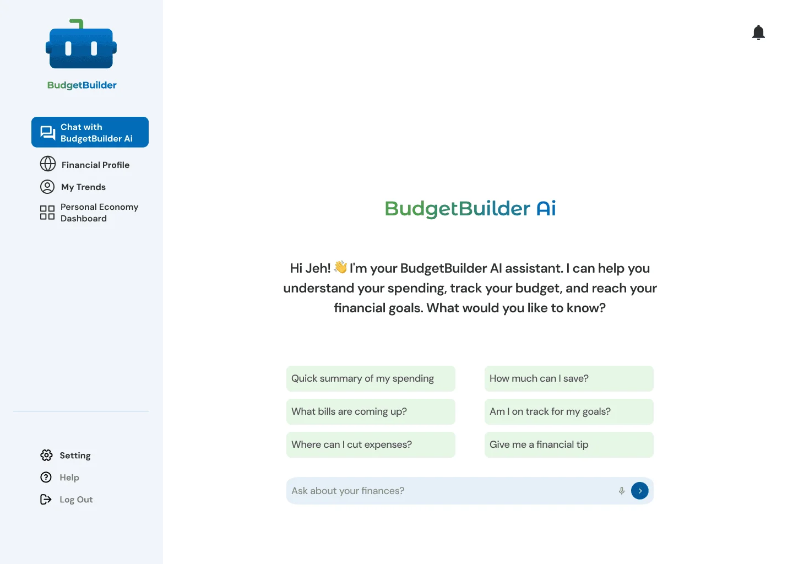
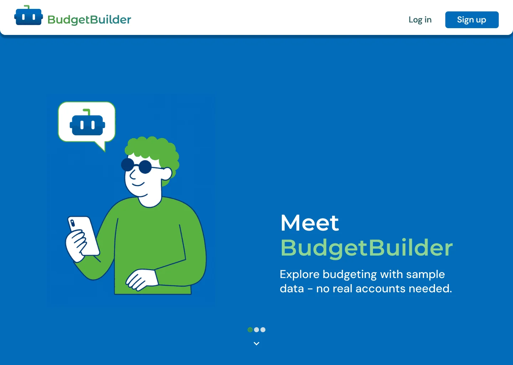
Onboarding, step 1. Try it with sample data first. No accounts needed to get value.
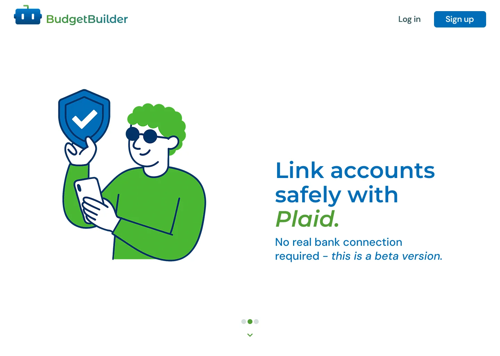
Onboarding, step 2. Linking real accounts comes second, with Plaid named up front.
Brand identity
Blue for trust. Green for growth.
Color palette click to copy
Logomark
AaMontserrat · headings and display
Bold 700SemiBold 600Medium 500Regular 400
chosen for its bold confidence
AaDM Sans · body and UI text
Bold 700SemiBold 600Medium 500Regular 400
approachable and easy to read
Key takeaways
What this project taught me.
Words are interface.
We iterated on language as hard as on layout. A plain sentence beside a number did more than another chart.
Calm beats complete.
Splitting one crowded view into four focused ones is where the drop in cognitive load came from.
AI needs exits.
An assistant that only informs leaves people stuck. Every answer here ends in a next question or an action.